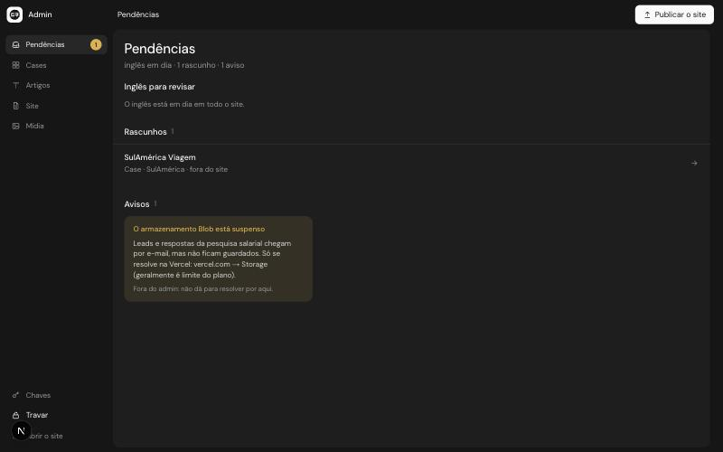
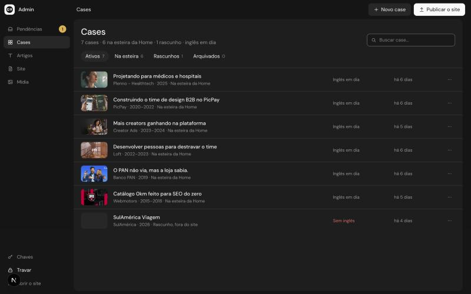
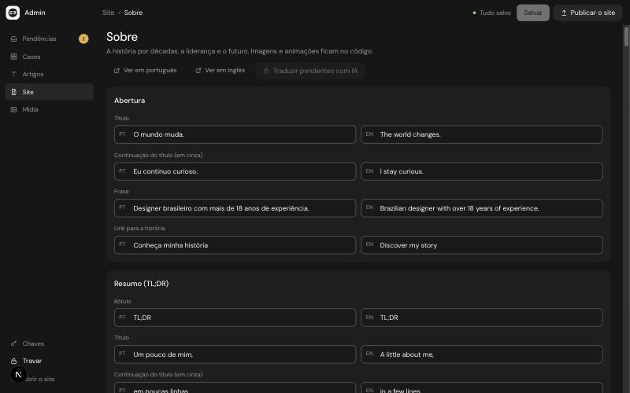

Admin: proposta de estilo
Tese visual: o admin vira uma bancada que responde. Cada linha e cada botão confirmam o toque em 120 ms: o fundo sobe um degrau e a seta anda 2 px. Cada tela chega em 160 ms, só com opacidade. O que está carregando mostra a forma do que vem, em vez de "Carregando…". A hierarquia vem de três tamanhos de letra e do espaço (24 px entre a cabeça e o trabalho, 32 px entre grupos), não de caixas: avisos, rascunhos e páginas viram linhas da mesma lista, e a cor só marca estado.
Padrões permitidos:
- divisória de 1 px entre as linhas de lista, porque a lista é uma tabela;
- ponto de estado ao lado de "Salvo", que pulsa só enquanto salva;
- número de Pendências no menu;
- linhas-esqueleto paradas enquanto carrega;
- mono só em endereços e variáveis;
- separador "·" nos metadados.
A paleta e a direção são as do DNA aprovado: nada muda de cor, só de ritmo, estado e movimento.
Movimento
Estados
Botões
Linhas de lista
Carregando, vazio e salvando
Campos
O título não pode ficar vazio.1. Pendências

Pendências
Inglês em dia · 1 rascunho · 1 aviso
- Aviso, rascunho e inglês viram linhas da mesma lista. As caixas âmbar saem, e o estado fica num ponto e na palavra.
- O que pede ação vem primeiro: avisos, depois rascunhos. O que está em dia desce e vira uma linha com ✓.
- Os títulos de grupo ficam em 13 px cinza, abaixo do título da tela (24 px): dois níveis em vez de três.
- Enquanto confere o site, a tela mostra linhas-esqueleto paradas, não "Conferindo…".
2. Lista de cases

Cases
7 cases · 6 na esteira da Home · 1 rascunho · inglês em dia
- As abas viram um trilho em pílula sobre o fundo do campo, e a escolhida sobe um degrau. Lê-se como um controle só, não como quatro botões soltos.
- As linhas têm 60 px, a miniatura 64×40 e uma seta que responde ao ponteiro. O "⋯" só aparece no hover e no foco: a linha descansa limpa.
- "Editado" usa o cinza mais fraco e números tabulares. O status (Inglês) é a única coluna que pode ter cor.
3. Uma página em Site (Sobre)

Sobre
A história por décadas, a liderança e o futuro. Imagens e animações ficam no código.
Abertura
Resumo (TL;DR)
- Um índice da página à esquerda, como o de Serviços, com "Google e compartilhamento" sempre por último. Em páginas longas como a Sobre (11 grupos), achar o grupo é um clique.
- Os grupos deixam de ser cartões soltos sobre o fundo. Viram seções de um cartão só, separadas por espaço e uma divisória, como as listas.
- "Traduzir pendentes com IA" sobe para a cabeça da página. "Ver no site" fica no topo como fantasma, ao lado de Salvar, a ação branca da tela.
O que fica igual
A paleta, as fontes, os raios, o menu de 5 áreas, a arquitetura, as páginas públicas e o editor de case: o editor é da sessão material-ui, e eu só levo para lá o que ela aceitar.
Pergunta: esta direção vale para o admin todo? Se sim, aplico no CSS compartilhado, nas listas, em Pendências, em Site e em Mídia, e combino o editor de case com a material-ui.